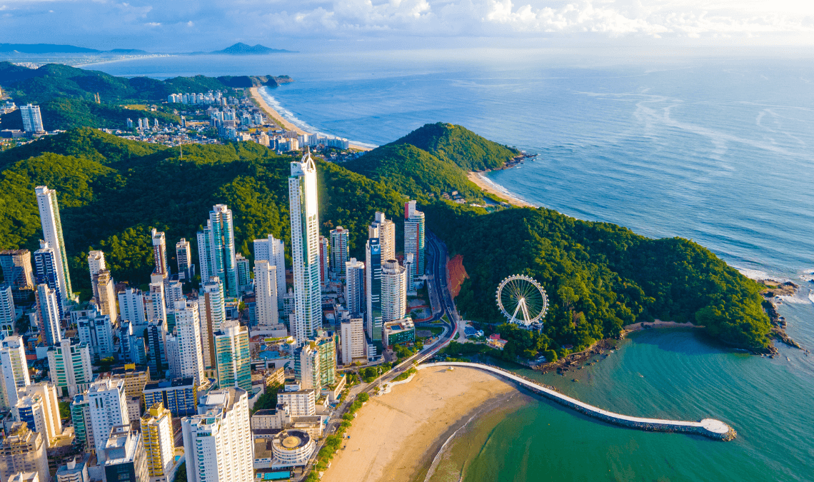

Florianópolis
Florianópolis
Conhecida como "Ilha da Magia", é a capital de Santa Catarina e oferece uma mistura única
de praias paradisíacas, vida noturna animada e cultura diversificada.
Lugares para Visitar:
Praia da Joaquina: Famosa por suas ondas perfeitas para o surfe e belas dunas.
Centro Histórico: Conheça a arquitetura colonial e as construções históricas do centro da cidade.
Lagoa da Conceição: Um lago pitoresco cercado por restaurantes, lojas e uma atmosfera descontraída.

Balneário Camboriú
Cidade costeira conhecida por suas praias deslumbrantes, vida noturna agitada e arranha-céus
impressionantes.
Lugares para Visitar:
Praia Central: A praia principal da cidade, ideal para banho de mar e atividades aquáticas.
Parque Unipraias: Um complexo de bondinhos que oferece vistas panorâmicas da cidade e acesso à
Praia de
Laranjeiras.
Molhe da Barra Sul: Uma passarela estilizada à beira-mar com vistas panorâmicas e restaurantes à
beira-mar.
 Bombinhas
Bombinhas
Pequeno paraíso na costa catarinense, famoso por suas praias paradisíacas, águas cristalinas e
natureza
preservada.
Lugares para Visitar:
Praia de Bombinhas: Uma das praias mais famosas da região, perfeita para mergulho e snorkeling.
Parque Municipal do Morro do Macaco: Trilha com vista panorâmica das praias e da natureza
exuberante.
Praia da Sepultura: Uma enseada tranquila com águas cristalinas ideais para nadar e relaxar..
 São Joaquim
São Joaquim
É conhecida como a "Cidade da Neve" e atrai visitantes no inverno devido às suas baixas
temperaturas
e possibilidade de neve.
Lugares para Visitar:
Morro da Igreja: Ponto mais alto da região, conhecido por ser um dos locais onde ocorre neve
com
mais frequência.
Vinícolas: Aproveite para degustar vinhos locais em aconchegantes vinícolas da região.
Praça João Ribeiro: Centro da cidade com arquitetura charmosa e uma estátua de São Joaquim..
 Urubici
Urubici
Outra cidade famosa por suas baixas temperaturas no inverno e oferece paisagens
deslumbrantes.
Lugares para Visitar:
Morro da Igreja: Assim como em São Joaquim, este é um dos pontos mais frios da região e pode
nevar
ocasionalmente.
Serra do Corvo Branco: Uma estrada sinuosa com vistas panorâmicas da região montanhosa.
Cascata do Avencal: Uma bela cascata em meio à natureza, ideal para caminhadas.
Campos Novos
É outra opção para aproveitar o inverno em Santa Catarina, oferecendo uma atmosfera
tranquila e
acolhedora
Lugares para Visitar:
Represa do Rio Caveiras: Um grande reservatório que oferece oportunidades para pesca e
atividades
náuticas.
Museu Histórico de Campos Novos: Conheça a história da região por meio de exposições e
artefatos.
Cervejarias Artesanais: Desfrute de cervejas locais em cervejarias da cidade.